1+N教学教研操作手册
功能说明
老师使用教学教研可实现课前备课、课中视频、课后评价等功能，管理者（教研员、校长）使用教学教研可实现教学管理、数据统计等功能
操作说明
1、登录页面
1+N教学教研提供了两种登录方式：密码登录和手机验证码登录，如下图所示，当信息输入有误时会有相应提示，可根据提示进行登录信息的修改。
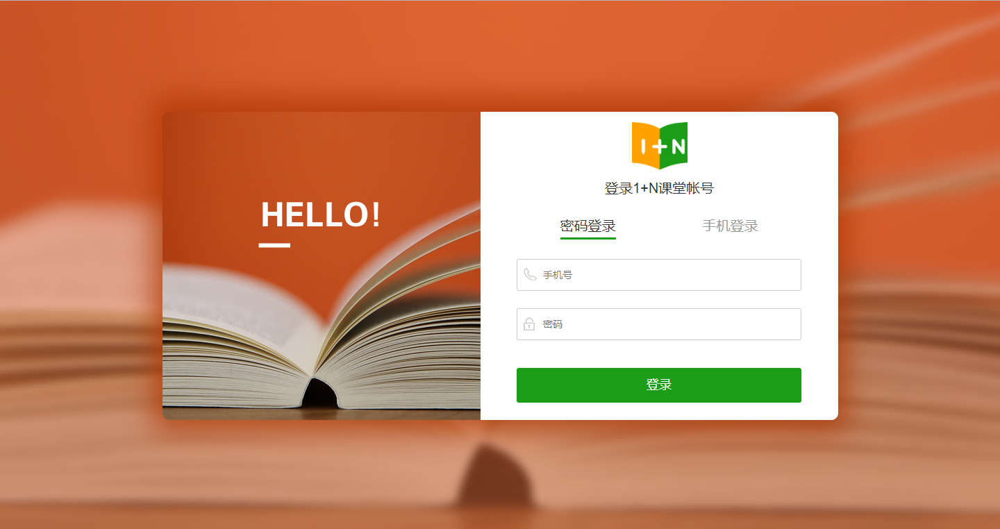 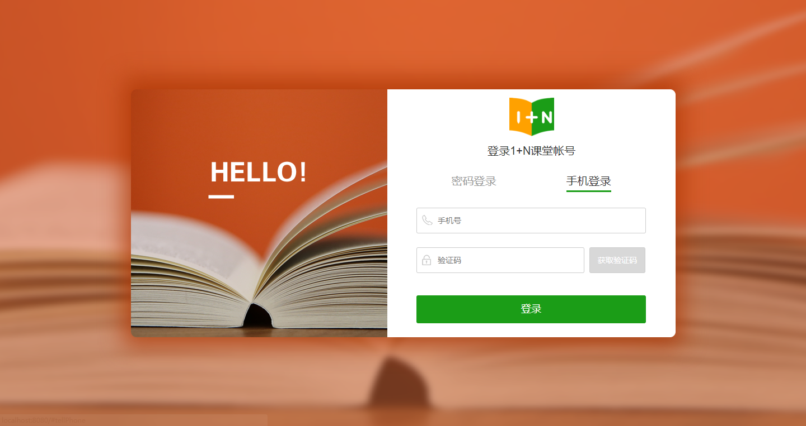2、备课评课页面
2.1 课程表
页面右上方可切换当前身份，课表也将随之改变，点击下图中标注的左右按钮可改变课表内显示的时间段。课表内每门课程后的圆点颜色按照任务详情内的规则与之对应。同时，点击一门课程，右侧课程栏将显示课程的具体信息，如课程时间、该门课程内为主讲老师还是辅导老师、课程状态、备课评课跳转按钮。
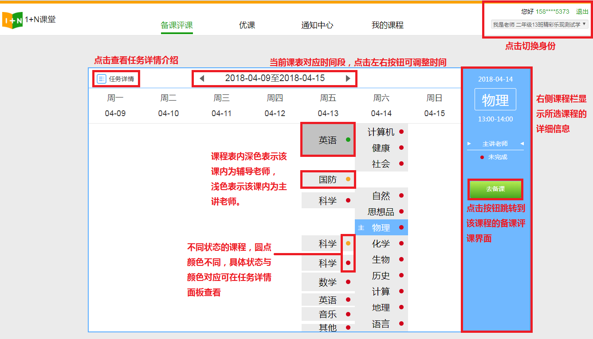老师身份下，若课程表内选中的课程在当前时间已结束且尚未推至优课，备课评课按钮下将显示推课按钮，点击后进行推课操作，如下图。若当前不是老师身份或课程不满足推至优课条件，该按钮将不显示。
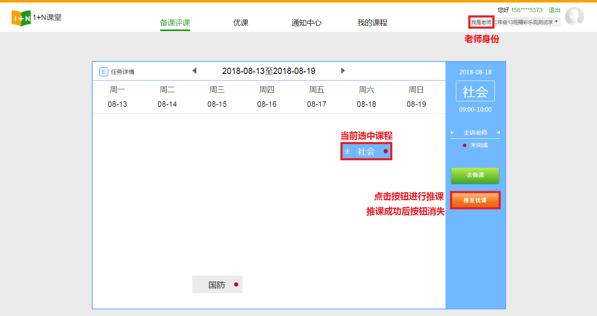当课程表内当周暂无课程，若身份为老师，则在课程表内会显示一个新建主讲课程按钮（如下图所示），点击按钮跳转到“我的课程”页面，“我的课程”页面的使用将在第五小节进行讲解。同样的，若当前并非老师身份，则不显示该按钮。
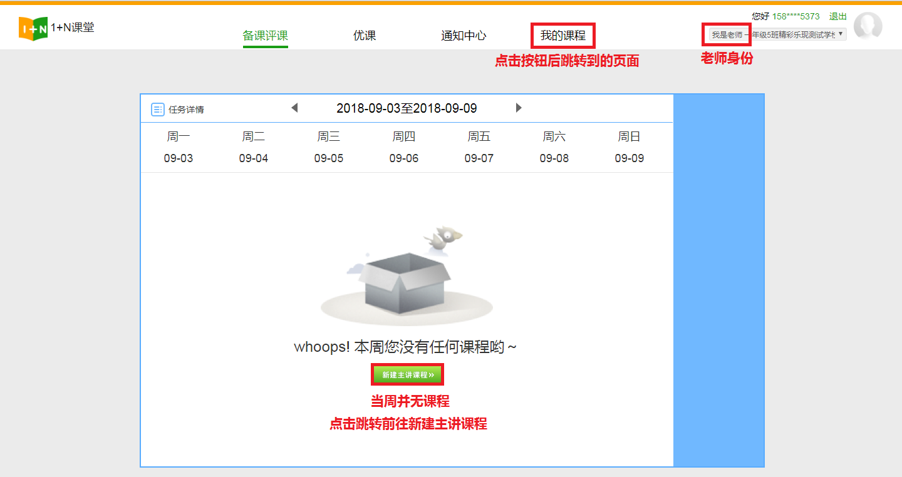教学教研页面内，可点击任务详情按钮查看课程状态分类，如图：
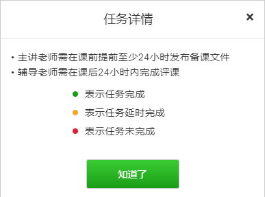点击示例中的去评课按钮，将跳转到该课程的备课评课页面
2.2 备课评课
备课评课页面：点击视频即可进行观看。评课页面如下图所示，可点击“去评价”按钮，进入评价界面，也可点击去“去查看”按钮查看已有的评价，评价内所给出的综合评分会显示在页面上方的星级中。点击备课文件下的“去看看”按钮，查看备课文件，可在该页面中提出建议、下载附件和上传附件。
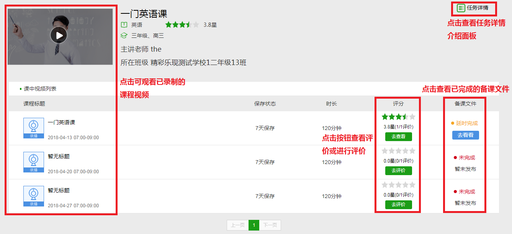若点击的是主讲课程内的去备课按钮，将跳转到备课页面，如下图所示。点击“去备课”按钮进入备课，也可在如图内所示的操作区内进行编辑、推至优课操作。
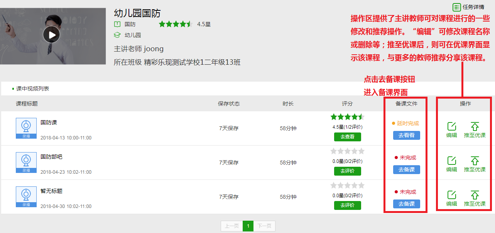3、优课
点击导航栏内的优课，进入优课界面。
在优课界面内，可以看到各位老师推至优课的课程，还可以通过左上方的选择框对所有课程进行筛选，方便您找到所需要的课程。点击课程条目同样可以观看到课程视频。
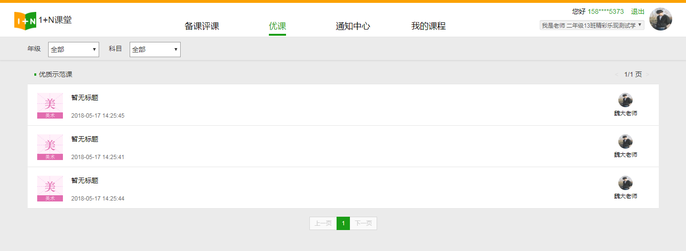4、通知中心
同样在导航栏中点击“通知中心”，进入通知中心页面。可看到该页面分为三部分——已接收、已发送和去发布，通过点击这三个功能导航切换功能界面,默认显示为已接收，如下图所示。
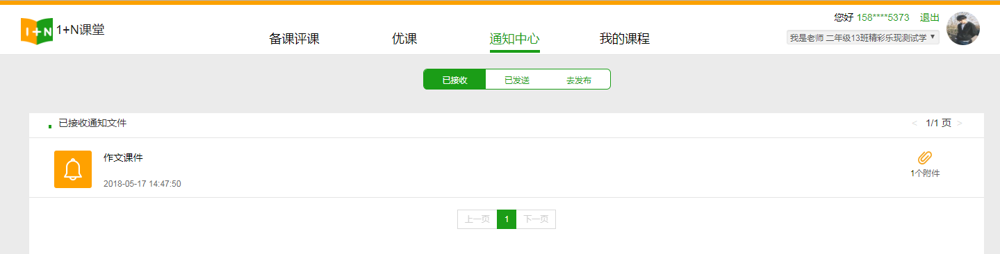去发布界面如下图所示，可在右侧根据课程筛选班级，也可在最下方添加附件。
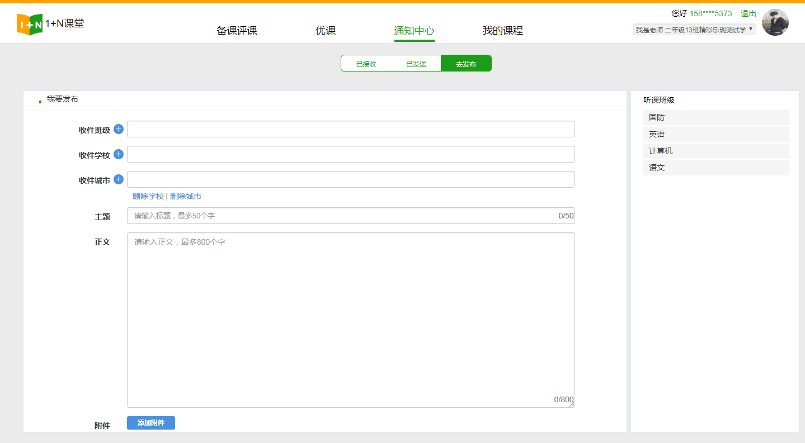5、我的课程
点击导航栏进入我的课程页面，右上方有当前账号下所有课程的统计数据。下部会显示所有主讲课程和听讲课程。
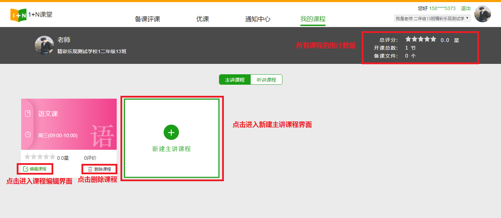点击编辑课程进入编辑界面
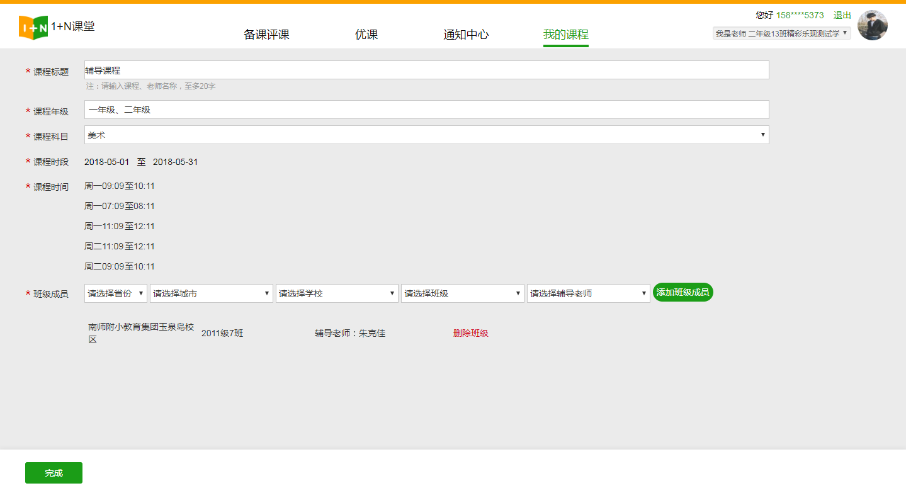点击新建课程进入新建课程界面
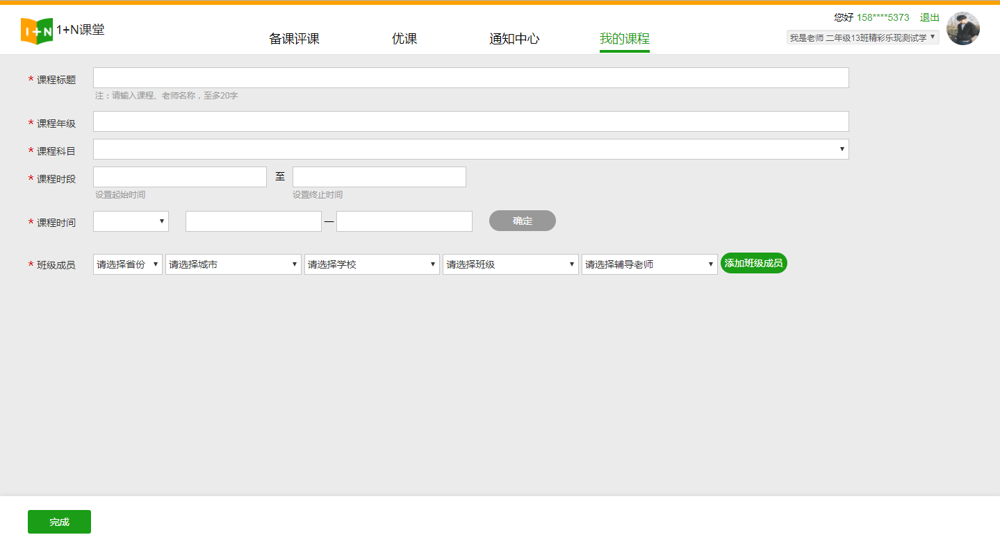